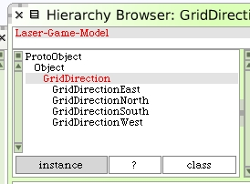
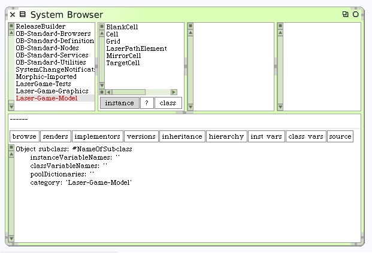
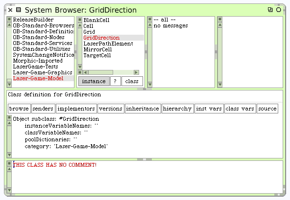
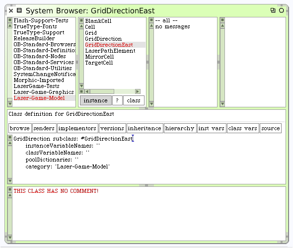
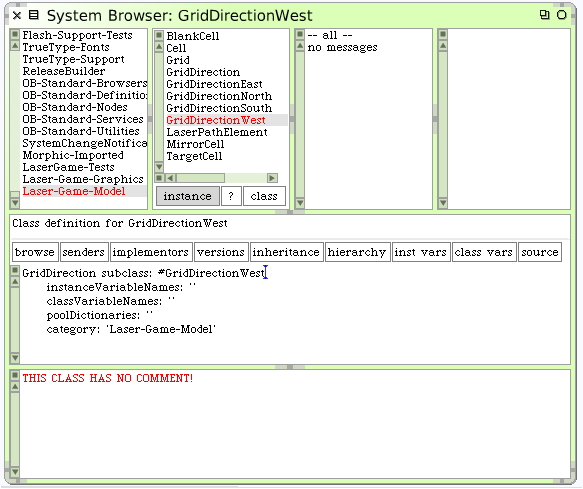
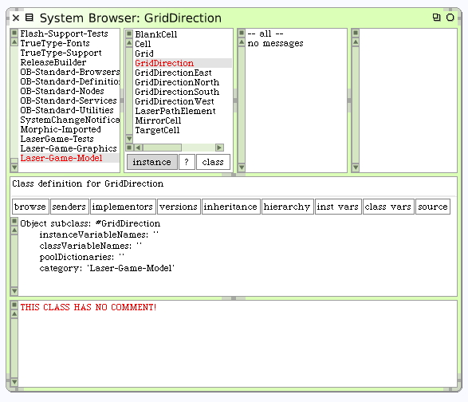
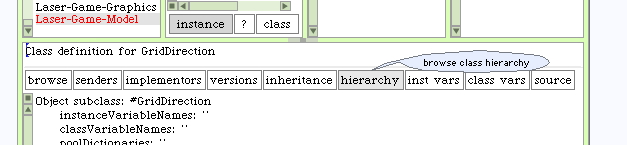
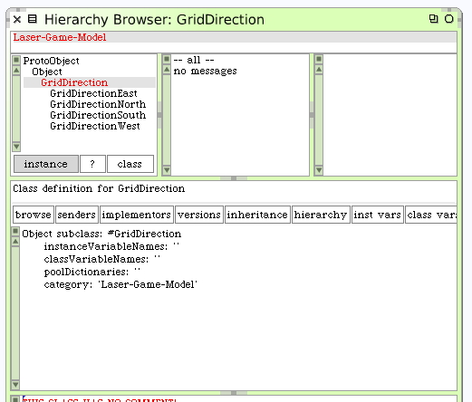

Direction Vectors
We've been using two kinds of systems to describe cell locations and laser beam direction. In one situation we use x@y (column x, row y) objects to describe where cells are located within the grid. We describe laser beam direction with the symbols #north, #east, #south and #west. A system needs to be constructed to allow us to combine these concepts when we start to navigate our laser beam across the grid and through cells. A clean class hierarchy of direction classes can handle the details nicely for us. Add the following classes, shown here in the correct hierarchy. Note that they are added on the Laser-Game-Model system category.
That browser view may be a bit confusing. What I'm doing is showing you the end result. Let's approach this carefully, showing exactly how to create these classes and then how to view them in a hierarchy as shown.
The first class we need to create will be the common class we will call GridDirection. From the World Menu, choose "open...", and then "class browser". The standard Squeak class browser is presented. Scroll down the System Categories list and select the system category "Laser-Game-Model", which we have of course already created.
Create the new class GridDirection as a subclass of Object.
We now want to create our 4 sublclasses for grid direction. Here is the class definition for the 1st one, GridDirectionEast.
Note that GridDirectionEast is a subclass of our new class GridDirection. Continue on and create the other three subclasses GridDirectionNorth, GridDirectionSouth and GridDirectionWest.
After having created these 4 subclasses of our new GridDirection class, let's change to a hierarchy view to inspect our results. Here's how you do that. First, select the GridDirection class.
Now click on the "hierarchy" button.
Squeak will open up a hierarchy browser on the class selected (GridDirection) and show all the subclasses in a nested list. You may have to resize your window to see the whole list.
Now that we have our new directions hierarchy, lets resume and add some methods to create behaviors. Note you can continue to write code for these classes using this hierarchy view browser if you want.